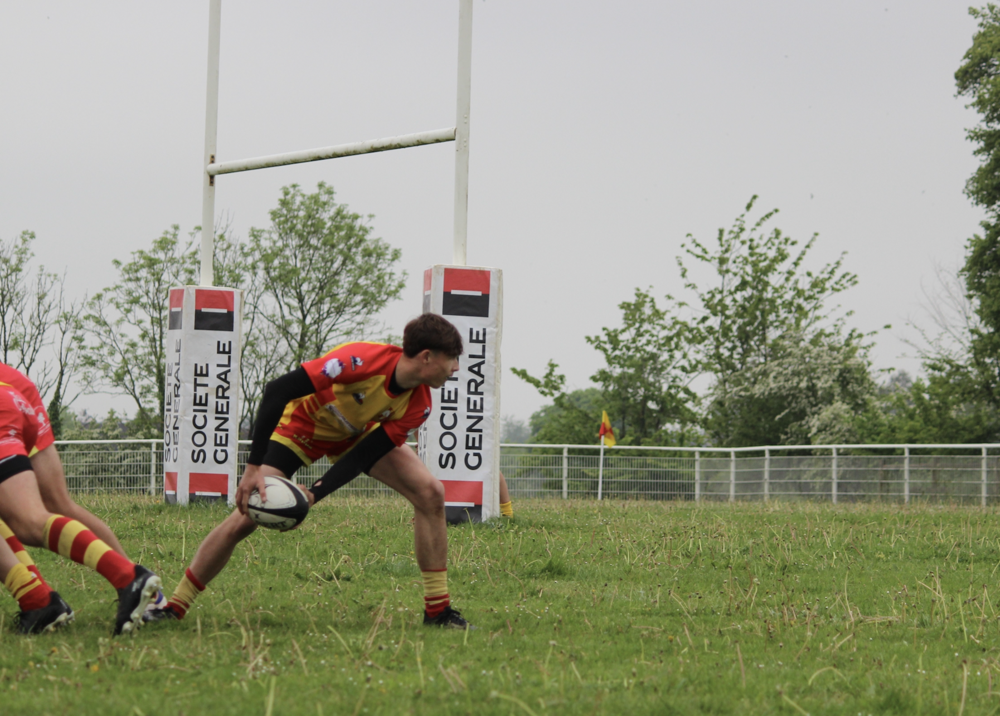

BUT Réseaux et Télécommunication : Campus III Ifs 14123
A propos de moi:
J'ai choisit de réliser ce site sur le thème du rugby, car j'ai pratiqué ce sport pendant plusieurs années et je souhaite partager ma passion pour cette dissipline avec d'autres personnes.
J'ai joué dans le club de rugby de Saint-lô pendant 7 saisons j'y ai passé de magnifique moments avec mes coéquipiés.
J'ai dû malheureusement arrêter d'y jouer pour les études, maintenant je vais à la salle de sport à hauteur de 5 fois par semaine.

Le projet doit répondre à :
Structure & Design : Site responsive (adapté mobiles/tablettes), utilisation de Flexbox/Grid et respect d'une charte graphique cohérente.
Qualité : Code valide W3C et conforme aux normes d'accessibilité (WCAG 2.0 AA).
Méthodologie : Gestion de version avec Git/GitHub (commits sémantiques) et suivi de projet (Planification/Livrables R1.15).
Contenu : Le site comprend une page d'accueil, une page dédiée au Rugby (mon sujet choisi) et une présentation de l'auteur.